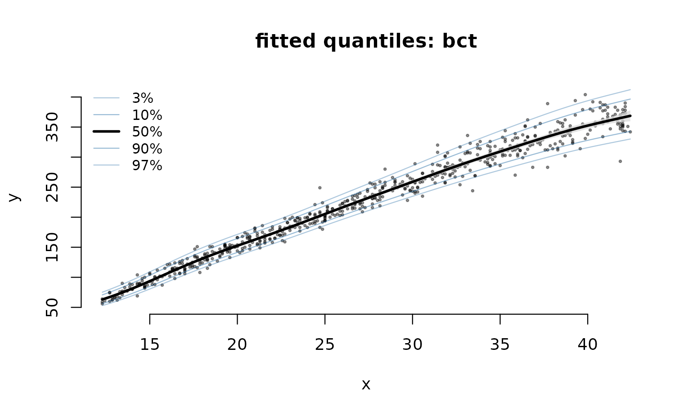

gamlss is the reference implementation of
distributional regression, so the first question about
gamRTMB is whether it agrees with it. This vignette fits
three standard GAMLSS examples both ways.
library(gamRTMB)
library(gamlss)
library(gamlss.data)
tm <- function(e) unname(system.time(e)["elapsed"])A note before the numbers: gamlss masks
edf(), which gamRTMB also exports, so with
both attached you need gamRTMB::edf().
edf <- gamRTMB::edfThe two packages are not doing quite the same
arithmetic. gamlss uses P-splines (pb()) with
a local maximum-likelihood smoothing criterion; gamRTMB
uses mgcv’s bases with REML via a Laplace approximation. So the fitted
curves should agree closely, and the effective degrees of freedom
roughly, but nothing should match to the last digit.
Normal location-scale: abdom
Foetal abdominal circumference against gestational age — the standard introductory GAMLSS example.
data(abdom)
t_gl <- tm(m1 <- gamlss(y ~ pb(x), sigma.fo = ~ pb(x), data = abdom,
trace = FALSE))
t_rt <- tm(f1 <- gamRTMB(y ~ list(mean = ~ s(x), sd = ~ s(x)), data = abdom))
data.frame(
fit = c("gamlss", "gamRTMB"),
seconds = round(c(t_gl, t_rt), 2),
edf = round(c(m1$df.fit, attr(edf(f1), "edf.total")), 2),
`-2logL` = round(c(m1$G.deviance, -2 * as.numeric(logLik(f1))), 1),
AIC = round(c(AIC(m1), AIC(f1)), 1),
check.names = FALSE
)
#> fit seconds edf -2logL AIC
#> 1 gamlss 0.24 7.68 4785.7 4801.1
#> 2 gamRTMB 0.88 7.63 4786.0 4801.2Nearly identical: 7.68 against 7.63 effective degrees of freedom, and AICs 0.15 apart. The fitted curves agree to within a fraction of a percent of the response’s own spread.
Gamma: rent
Munich rents against floor space. This one exposes a difference in
convention rather than in fit: gamlss’s GA
family parameterises the second argument as a coefficient of
variation, so its sigma must be multiplied by
mu to be compared with the standard deviation
RTMBdist’s gamma2 reports.
gamRTMB always uses the density’s own parameterisation,
which is the point of not renaming parameters to
mu/sigma.
data(rent)
t_gl <- tm(m2 <- gamlss(R ~ pb(Fl), sigma.fo = ~ pb(Fl), family = GA,
data = rent, trace = FALSE))
t_rt <- tm(f2 <- gamRTMB(R ~ list(mean = ~ s(Fl), sd = ~ s(Fl)),
family = fam("gamma2"), data = rent))
data.frame(
fit = c("gamlss", "gamRTMB"),
seconds = round(c(t_gl, t_rt), 2),
edf = round(c(m2$df.fit, attr(edf(f2), "edf.total")), 2),
AIC = round(c(AIC(m2), AIC(f2)), 1)
)
#> fit seconds edf AIC
#> 1 gamlss 0.64 9.11 28061.6
#> 2 gamRTMB 1.08 8.74 28062.9
p2 <- predict(f2, type = "response")
c(mean = cor(fitted(m2, "mu"), p2$mean),
sd = cor(fitted(m2, "sigma") * fitted(m2, "mu"), p2$sd))
#> mean sd
#> 0.9999998 0.9998615Four parameters: Box-Cox t on abdom
The LMS-style centile fit, and GAMLSS’s flagship.
RTMBdist implements the same BCT density, to
the digit:
c(RTMBdist = RTMBdist::dbct(60, 100, 0.1, 1, 5, log = TRUE),
gamlss = gamlss.dist::dBCT(60, 100, 0.1, 1, 5, log = TRUE))
#> RTMBdist gamlss
#> -7.576373 -7.576373
t_gl <- tm(m3 <- gamlss(y ~ pb(x), sigma.fo = ~ pb(x), nu.fo = ~ 1,
tau.fo = ~ 1, family = BCT, data = abdom,
trace = FALSE))
t_rt <- tm(f3 <- gamRTMB(y ~ list(mu = ~ s(x), sigma = ~ s(x),
nu = ~ 1, tau = ~ 1),
family = fam("bct"), data = abdom))
data.frame(
fit = c("gamlss", "gamRTMB"),
seconds = round(c(t_gl, t_rt), 2),
edf = round(c(m3$df.fit, attr(edf(f3), "edf.total")), 2),
AIC = round(c(AIC(m3), AIC(f3)), 1)
)
#> fit seconds edf AIC
#> 1 gamlss 0.75 11.76 4794.5
#> 2 gamRTMB 3.13 15.01 4803.5Here the two part company a little. The fitted curves still agree —
p3 <- predict(f3, type = "response")
c(mu = cor(fitted(m3, "mu"), p3$mu), sigma = cor(fitted(m3, "sigma"), p3$sigma))
#> mu sigma
#> 0.9999587 0.9990981— but gamRTMB spends about three more effective degrees
of freedom and pays for them in AIC. REML and GAMLSS’s criterion are
choosing different amounts of smoothing on a 610-point dataset, and on
this example GAMLSS chooses better. Worth knowing rather than glossing
over.

Where the two disagree: flat directions
The three examples so far are the ones GAMLSS was built for, and it handles them. The place the two approaches genuinely part company is a smooth on a parameter whose Fisher information collapses over part of its range.
GAMLSS fits by backfitting (the RS algorithm), which reweights the
data by that information at every step and selects the smoothing
parameter from those same weights. When the information goes to zero the
weights collapse, the working response blows up, and the penalty cannot
rein it back in because it was chosen from the degenerate weights.
gamRTMB never forms a working weight: the smooth’s
coefficients are integrated out by a Laplace approximation and the
smoothing parameter comes from the resulting marginal likelihood, which
stays finite in a flat direction instead of inverting it.
Both cases below are simulated, so we know the answer. The helper fits both packages on several data sets and records how often each converged and how far its fitted parameter lands from the truth.
compare <- function(nseed, sim, gfit, rfit, gpar, rpar, trans = identity) {
one <- function(sx) {
d <- sim(sx); conv <- TRUE
g <- withCallingHandlers(tryCatch(gfit(d), error = function(e) NULL),
warning = function(z) {
if (grepl("converge", conditionMessage(z))) conv <<- FALSE
invokeRestart("muffleWarning") })
r <- tryCatch(suppressWarnings(rfit(d)), error = function(e) NULL)
err <- function(v) if (is.null(v)) NA else
sqrt(mean((trans(v) - trans(d$true))^2))
c(!is.null(g) && conv && isTRUE(g$converged),
!is.null(r) && isTRUE(r$convergence),
err(if (is.null(g)) NULL else fitted(g, gpar)),
err(if (is.null(r)) NULL else fitted(r)[[rpar]]))
}
z <- vapply(seq_len(nseed), one, numeric(4))
data.frame(converged = paste0(rowSums(z[1:2, ]), "/", nseed),
rmse = round(apply(z[3:4, ], 1, median), 2),
row.names = c("gamlss", "gamRTMB"))
}A smooth on the degrees of freedom of a t
The t density approaches a normal as its degrees of freedom
grow, so the likelihood flattens out in that direction: the observed
information for log(df) falls from 0.24 at
df = 2 to 3e-4 at df = 100. Here the true
df sweeps from 0.6 to 12 as a function of x,
with location and scale held constant.
compare(10,
function(sx) { set.seed(sx); x <- runif(200)
nu <- exp(1 + 1.5 * cos(2 * pi * x))
data.frame(x = x, true = nu, y = rTF(200, 0, 1, nu)) },
function(d) gamlss(y ~ 1, sigma.fo = ~ 1, nu.fo = ~ pb(x),
family = TF, data = d, trace = FALSE),
function(d) gamRTMB(y ~ list(mu = ~ 1, sigma = ~ 1, df = ~ s(x, k = 10)),
family = fam("t2"), data = d),
"nu", "df", log)
#> converged rmse
#> gamlss 7/10 15.00
#> gamRTMB 10/10 0.71The RMSE is on the log scale, so a value of 15 means the fitted
degrees of freedom are out by a factor of exp(15). The
failure is not confined to the runs GAMLSS flags: on five of the six
runs it reports as converged, the fitted df still
runs off past 1e11, and on one of them it reaches 3e221. Seed 8 is the
clearest single case — GAMLSS spends 22.0 effective degrees of freedom
to reach a log-likelihood of -436.3, where gamRTMB spends
3.5 and reaches -414.4. More flexibility, worse fit. Swapping the
smoother does not help: pb(method = "GAIC") and a fixed-df
cs() both diverge the same way, which is what points at the
working weights rather than at the choice of penalty.
A skew normal with all three parameters smooth
compare(8,
function(sx) { set.seed(sx); x <- runif(250); al <- 3 * sin(2 * pi * x)
data.frame(x = x, true = al,
y = rSN1(250, sin(2 * pi * x),
exp(-0.5 + 0.6 * cos(2 * pi * x)), al)) },
function(d) gamlss(y ~ pb(x), sigma.fo = ~ pb(x), nu.fo = ~ pb(x),
family = SN1, data = d, trace = FALSE),
function(d) gamRTMB(y ~ list(mean = ~ s(x, k = 10), sd = ~ s(x, k = 10),
alpha = ~ s(x, k = 10)),
family = fam("skewnorm2"), data = d),
"nu", "alpha")
#> converged rmse
#> gamlss 2/8 2.25
#> gamRTMB 6/8 1.95The slant is the flat direction here: the score for it vanishes
identically at zero skewness, so the surface has a plateau exactly where
a fit is likely to start. GAMLSS rarely gets off it. Its fitted slant
stays inside 0.4 in absolute value against a truth ranging over 3, which
is why its RMSE of 2.25 is no better than the 2.12 you would score by
giving up and fitting no skewness at all — and it spends 15 to 18
effective degrees of freedom doing it. gamRTMB recovers
roughly the right amplitude, though it is not comfortable here either:
it fails to converge on some runs and overshoots the slant on others.
This is a hard likelihood for anything.
Speed
One run each on one machine, so read these as orders of magnitude rather than benchmarks. Dutch boys’ BMI against age, normal location-scale, at three sample sizes:
data(dbbmi)
sizes <- c(500, 2000, nrow(dbbmi))
res <- t(vapply(sizes, function(n) {
d <- if (n == nrow(dbbmi)) dbbmi else
{ set.seed(1); dbbmi[sort(sample(nrow(dbbmi), n)), ] }
c(gamlss = tm(gamlss(bmi ~ pb(age), sigma.fo = ~ pb(age), data = d,
trace = FALSE)),
gamRTMB = tm(gamRTMB(bmi ~ list(mean = ~ s(age), sd = ~ s(age)), data = d)))
}, c(gamlss = 0, gamRTMB = 0)))
data.frame(n = sizes, round(res, 2))
#> n gamlss gamRTMB
#> 1 500 0.95 1.04
#> 2 2000 0.72 2.65
#> 3 7294 5.11 6.51Neither dominates. Both stay within about a factor of two of each
other across this range, and which one is ahead is not even monotone in
n — which is itself the finding: the differences are small
enough that a single run cannot separate them, and no scaling story
should be read into three points this close. Speed is not a reason to
pick either package here.
What actually differs
Where gamRTMB gives you something else:
-
Parameter names and count. GAMLSS is capped at four
parameters called
mu,sigma,nu,tau;gamRTMBhas no cap and uses each density’s own names — hencemean/sdfor a Gaussian andxi/omega/alphafor a skew normal. Therentexample shows why that matters:GA’ssigmais a coefficient of variation, and a generic name hides it. -
mgcv’s smooths.
s(),t2(),by=factors,bs="fs",bs="re", shrinkage bases, andid=to share a smoothing parameter between terms and between distributional parameters. - Exact derivatives, by automatic differentiation rather than analytic or numerical ones supplied per family.
- Flat directions, as above: no working weights to collapse, so a smooth on a weakly identified parameter degrades rather than diverges.
Where GAMLSS is ahead today: term selection (stepGAIC),
distribution search (fitDist, chooseDist),
censoring and truncation of arbitrary families
(gamlss.cens, gamlss.tr), finite mixtures, and
twenty years of use. If you need those, use GAMLSS.